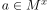
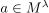
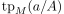
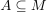
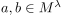
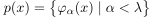
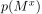
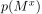
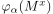

Tipo - Teoria dei Modelli
Sia  un linguaggio del prim’ordine. Si utilizzerà la Notazione TEORIA DEI MODELLI.
un linguaggio del prim’ordine. Si utilizzerà la Notazione TEORIA DEI MODELLI.
Un tipo è un insieme di -formule. Si denota con  , dove
, dove  indicano le variabili che potrebbero occorrere tra le formule.
indicano le variabili che potrebbero occorrere tra le formule.
Sia  una -struttura.
una -struttura.
Soddisfazione di un tipo
Se per qualche  si ha che per ogni  vale
vale  (vedi Soddisfazione di una formula) si scive una delle seguenti:
(vedi Soddisfazione di una formula) si scive una delle seguenti:
Diremo che  è una soluzione o una realizzazione di .
è una soluzione o una realizzazione di .
Tipo soddisfacibile
- Diremo che è soddisfacibile in (consistente in ) se ha una soluzione in .
- Diremo che è soddisfacibile (consistente) se è realizzato per qualche -struttura
Tipo finitamente soddisfacibile
- Diremo che è finitamente soddisfacibile in (o finitamente consistente) se tutti i sottoinsiemi finiti
 sono soddisfacibili in (o, equivalentemente, se la congiunzione arbitraria di formule di sono soddisfacibili in ).
sono soddisfacibili in (o, equivalentemente, se la congiunzione arbitraria di formule di sono soddisfacibili in ). - Diremo che è finitamente soddisfacibile se tutti i sottoinsiemi finiti sono soddisfacibili.
Tipo di un elemento di una struttura
Sia  per qualche cardinale  , e sia una variabile di lunghezza .
, e sia una variabile di lunghezza .
Si definisce il tipo di in come
(vedi Soddisfazione di una formula)
Generalizzando, si scrive , per  come
Se  è un insieme di formule (chiuso per sostituzione di variabili) si definisce il -tipo di in come
è un insieme di formule (chiuso per sostituzione di variabili) si definisce il -tipo di in come
Tuple elementarmente equivalenti su un insieme di parametri
Se  e , si scrive
(e si dice che e  sono equivalenti su
sono equivalenti su  ) se
) se
Insieme definito da un tipo
Sia un tipo, .
L’insieme definito da  in , denotato con  è
in , denotato con  è
dove  è l’insieme definito da  .
.
L’insieme viene detto tipo-definibile.